Next: How rules are applied Up: Description of Patterns Previous: Patterns with features Contents
ADV<lemma:very|quite|rather> ADV|ADJ
PRO<lemma:that&type:Q> VERB
VERB<(mode:S)|(tense:P)> NOUN
The first pattern introduces two ``|'' operators. The first one represents a disjunction among three possible values (``very'', ``quite'', and ``more'') of the feature ``lemma''. The second one is an operator on tags: it allows to choose between either an adverb or an adjective. The second pattern introduces the ``SPMamp;'' operator between two features that must be filled simultaneously: to be a relative pronoun (R), and to be lexicalized by means of ``that''. Finally, in the third pattern, there is a disjunction between two different verbal features. Let's note that disjunctions on features by means of the operator | requires the use of brackets: ``(feature1:value1)|(feature2:value2)''.
The number of arguments of both | and & is unlimited. When combining the two operators (only with features), & must be always within the scope of |. Below, we show some well formed expressions in DepPattern:
Tag1<(feature1:value1)|(feature2:value2&feature3:value3)>
Tag1<(feature1:value1&feature2:value2)|(feature3:value3)>
Let 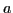, 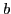, and 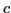 be 3 features. All possible combination of these 3 features with the 2 boolean operators are represented as follows:
| DepPattern representation | Standard bracketed representation |
|---|---|
| 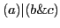 | 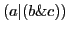 |
| 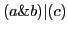 | 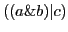 |
| 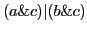 | 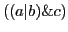 |
| 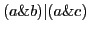 | 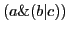 |
gamallo 2012-02-06